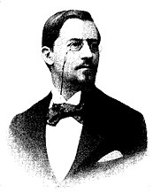
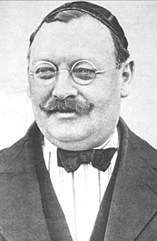

Fútbol Club Barcelona, (pengucapan bahasa Spanyol: [fubˈbɔl klub bəɾsəˈlonə]) juga dikenal sebagai Barcelona atau Barça, adalah klub sepak bola profesional yang berbasis di Barcelona, Catalunya, Spanyol, yang ikut serta di
kompetisi tertinggi sepak bola Spanyol, La Liga. Didirikan pada tahun 1899 oleh sekelompok pemain Swiss, Inggris, Jerman dan Katalan yang dipimpin oleh Joan Gamper, klub telah menjadi simbol budaya Catalan dan Catalanisme, yang
mempunyai motto "Més que un club" (Lebih dari sebuah klub). Tidak seperti banyak klub sepak bola lainnya, para pendukung memiliki dan mengoperasikan Barcelona. Ia adalah klub sepak bola kedua terkaya di dunia dalam hal pendapatan,
dengan omzet tahunan sebesar €560,8 juta dan kedua yang paling berharga, senilai $3,56 miliar.[2][3] Lagu kebangsaan resmi Barcelona adalah "Cant del Barça", yang ditulis oleh Jaume Picas dan Josep Maria Espinas.[4]Secara
tradisional, Barcelona mengenakan kostum merah dan biru, sehingga klub ini dijuluki Blaugrana. Klub ini masuk menjadi peserta Primera División (Divisi Utama) sejak tahun 1928, dan bersama-sama Real Madrid dan Athletic Bilbao
menjadi tim yang tak pernah terdegradasi ke Segunda División (Divisi Dua). Klub ini juga menjadi klub yang menjuarai liga Spanyol pertama kali. Dengan persembahan 23 gelar Liga Spanyol, 25 gelar Copa del Rey, 10 gelar Piala Super
Spanyol, 5 gelar Liga Champions Eropa, 4 gelar Piala UEFA, 4 gelar Piala Super Eropa, FC Barcelona menjadi salah satu tim tersukses di Spanyol, Eropa, dan dunia. Bukti paling nyata ketika pada tahun 2009 FC Barcelona berhasil
menjadi klub Spanyol pertama yang berhasil meraih gelar treble (juara La Liga, Copa del Rey, dan Liga Champions). Dilanjutkan dengan raihan gelar Piala Super Spanyol, Piala Super Eropa dan Piala Dunia Antarklub FIFA untuk
melengkapi raihan gelarnya menjadi Sextuples. Barcelona merupakan klub sepak bola pertama di dunia yang melakukan raihan ini. Penggemar Barca juga sering disebut Culés. Barcelona adalah salah satu tim yang paling didukung di
dunia, dan memiliki media sosial terbesar di antara tim olahraga lainnya.[5][6][7] Pemain Barca telah memenangkan catatan jumlah penghargaan Ballon d'Or (12), serta catatan jumlah penghargaan FIFA World Player of the Year (7).
Pada tahun 2010, klub membuat sejarah ketika tiga pemain yang datang melalui akademinya (Messi, Iniesta & Xavi) terpilih sebagai tiga pemain terbaik di dunia, setelah mengantongi tempat teratas di FIFA Ballon d'Or, prestasi belum
pernah terjadi sebelumnya untuk pemain dari sekolah sepak bola yang sama.

Periode awal (1899–1922)

Perjuangan melawan sejarah (1923–1957)
Pada tahun 1898, Hans Gamper, yang kemudian dikenal sebagai Joan Gamper, tiba di Barcelona untuk alasan profesional. Dia bermain sepak bola bersama rekan-rekannya di lapangan di Bonanova, yang kemudian menjadi markas pertama
Barcelona, pada waktu senggangnya. Pada 22 Oktober 1899, Gamper memasang sebuah iklan di majalah Los Deportes untuk menemukan para pemain yang tertarik untuk membentuk sebuah tim sepak bola. Hasilnya, pada 29 November, Gamper dan
sebelas pemain lainnya (Otto Kunzle dan Walter Wild dari Swiss; John Parsons dan William Parsons dari Inggris; Otto Maier dari Jerman; Lluís d’Ossó, Bartomeu Terradas, Enric Ducal, Pere Cabot, Carles Pujol dan Josep Llobet dari
Katalan) berkumpul di Solé Gymnasium untuk mendirikan Futbol Club Barcelona.[8] Walter Wild kemudian ditunjuk sebagai presiden pertama klub.[9] FC Barcelona memiliki awal yang sukses di kompetisi regional maupun nasional, dengan
berpartisipasi di Campionat de Catalunya dan Copa del Rey. Pada tahun 1902, Barcelona memenangkan piala pertamanya dengan menjuarai Copa Macaya dan juga berpartisipasi di Copa del Rey pertama, namun kemudian kalah 1–2 dari Bizcaya
di babak final.[10] Pada tahun 1908, Joan Gamper menjadi presiden klub karena tergerak untuk menyelamatkan Barcelona dari krisis yang dialami klub pada saat itu sejak gagal memenangkan kompetisi apapun setelah menang Campionat de
Catalunya pada tahun 1905. Gamper membangun kembali klub, sehingga pada musim 1908–1909 Barcelona kembali menjadi juara Campionat de Catalunya dengan rekor tanpa kekalahan di sepanjang kompetisi.[11] Pada 14 Maret 1909, Camp de la
Indústria diresmikan sebagai stadion pertama Barcelona. Kemudian pada tahun 1910, klub mengadakan kontes membuat lambang yang diikuti anggota-anggota klub. Kontes itu dimenangkan Carles Comamala, dan desainnya menjadi lambang yang
dipakai klub hingga saat ini, dengan beberapa perubahan kecil.[12] Pada tahun 1916, dibangun tribun dua tingkat pertama di Spanyol pada Camp de la Indústria, sehingga menambah kapasitas stadion tersebut menjadi 6.000 penonton.[13]
Barcelona meraih tiga kali gelar Copa del Rey dalam empat musim antara tahun 1909 hingga 1913. Pada periode yang sama, Barcelona juga menjuarai empat kali Pyrenees Club yang merupakan kompetisi internasional pertama yang diikuti
klub. Peserta Pyrenees Club terdiri atas tim-tim dari Katalan, Basque dan Prancis Selatan.[14] Pada musim 1911–1912, Paulino Alcántara, pesepak bola kelahiran Filipina, menjalani debutnya pada umur 15 tahun. Ia dianggap sebagai
pemain bintang pertama Barcelona dan menjadi pencetak gol terbanyak sebelum kedatangan Lionel Messi. Alcántara mencetak 369 gol dalam 357 pertandingan sepanjang kariernya di Barcelona. Sejak itu, Barcelona terus kedatangan pemain
yang menjadi idola penggemar, seperti Samitier, Zamora, Sagi, Piera dan Sancho.[13] Pada 7 Juli 1917, Jack Greenwell menjadi pelatih resmi pertama Barcelona. Sebelumnya, ia menjadi pemain sejak 1912 setelah pindah dari Crook Town.
Sebagai pelatih, ia memenangkan 2 Copa del Rey dan 5 Campionat de Catalunya.[15] Pada 20 Mei 1922, Barcelona berpindah markas ke Les Corts yang dirancang Santiago Mestres dan Josep Alemany dengan kapasitas 22.000. Stadion ini
dibangun dengan biaya 991.984,05 peseta.[16]
Pada 14 Juni 1925, para penonton di stadion mengolok-olok lagu kebangsaan Spanyol sebelum pertandingan melawan Júpiter yang merupakan pertandingan penghormatan kepada paduan suara Orfeó Català. Akibatnya, pada 10 Juli, Primo de
Rivera memaksa Gamper mundur sebagai presiden dan aktivitas klub ditutup selama enam bulan.[11] FC Barcelona merayakan ulang tahun ke-25 pada 7 dan 8 Desember 1924 dengan mengadakan dua pertandingan melawan Real Unión de Irun di
stadion Les Corts. Pada saat itu, Barcelona sudah beranggotakan 12.207 orang.[16] Pada tahun 1928, Barcelona meraih gelar Copa del Rey setelah mengalahkan Real Sociedad dengan skor 3–1 pada laga final yang diselenggarakan di
Santander. Plattkó, yang menjadi kiper pada pertandingan itu, mengalami cedera serius setelah menunjukkan performa heroik di sepanjang pertandingan. Seorang sastrawan Spanyol, Rafael Alberti, kemudian mengenang Plattkó pada sebuah
puisi berjudul “Oda a Platko”.[16][17] Barcelona menjadi juara liga Spanyol pertama yang diselenggarakan mulai 12 Februari 1929 selama empat setengah bulan, dengan raihan 25 poin. Manuel Parera menjadi pencetak gol terbanyak
pertama di liga Spanyol. Namun, para pendukung tidak terlalu merayakan gelar ini karena belum dianggap sebagai kompetisi penting. Joan Gamper bunuh diri pada 30 Juli 1930, diduga akibat kemunduran bisnis yang dialaminya dan
paksaan mundur dari klub.[11][18]
Trophy
Hingga Mei 2016, Barcelona telah memenangkan 26 La Liga, 31 Copa del Rey, 13 Supercopa de España, 3 Copa Eva Duarte dan 2 piala Copa de la Liga, serta menjadi pemegang rekor untuk empat kompetisi terakhir. Juga mereka telah
memenangkan 5 Liga Champions, rekor 4 Piala Winners UEFA, 5 Piala Super UEFA dan tiga rekor Piala Dunia Antarklub FIFA. Mereka juga memenangkan rekor 3 Piala Inter-Cities Fairs, dianggap pendahulu ke Piala UEFA/Liga Eropa.
Barcelona adalah satu-satunya klub Eropa telah memainkan sepak bola kontinental setiap musim sejak 1955, dan salah satu dari tiga klub tidak pernah terdegradasi dari La Liga, bersama dengan Athletic Bilbao dan Real Madrid. Pada
tahun 2009, Barcelona menjadi klub pertama di Spanyol untuk memenangkan treble terdiri dari La Liga, Copa del Rey, dan Liga Champions. Pada tahun yang sama, juga menjadi klub sepak bola pertama yang memenangkan enam dari enam
kompetisi dalam satu tahun, Malthus menyelesaikan sextuple itu, Terdiri treble tersebut dan Piala Super Spanyol, Piala Super UEFA dan Piala Dunia Antarklub FIFA.
El Clasico
Dalam sebuah liga nasional di suatu negara, sering terdapat persaingan sengit antara dua tim terkuat, dan ini terutama terjadi di La Liga, di mana pertandingan antara Real Madrid dan Barcelona dikenal sebagai "Pertemuan Klasik"
(El Clásico). Sejak awal kompetisi nasional dimulai, kedua klub sering dipandang sebagai pencerminan/wakil dari dua daerah berbeda di Spanyol: Catalunya dan Castilla, serta dari dua kota. Persaingan ini mencerminkan berbagai hal,
termasuk ketegangan politik dan budaya antara Catalunya dan Castilla yang merupakan gambaran umum dari Perang Saudara Spanyol. Selama era kediktatoran Miguel Primo de Rivera dan terutama Francisco Franco (1939—1975), semua budaya
regional ditekan. Semua bahasa daerah yang dipakai di wilayah Spanyol, kecuali bahasa Spanyol (Castilla), secara resmi dilarang. Simbolisasi keinginan rakyat untuk kebebasan Catalunya membuat Barcelona menjadi "lebih dari sekadar
klub sepak bola" (més que un club) untuk masyarakat Catalan. Menurut Manuel Vázquez Montalbán, cara terbaik untuk orang Catalan untuk menunjukkan identitas mereka adalah dengan bergabung dengan Barcelona. Hal ini lebih kecil
risikonya daripada bergabung dengan gerakan anti-Franco, dan memungkinkan mereka untuk mengekspresikan ketidakpuasan mereka. Di sisi lain, Real Madrid secara luas dilihat sebagai perwujudan dari sentralisme berdaulat dan rezim
fasis di tingkat manajemen dan di bawahnya. Santiago Bernabeu yang menjadi presiden klub merupakan seorang pejuang untuk los nacionales. Namun, selama Perang Saudara Spanyol, anggota kedua klub seperti Josep Sunyol (Barcelona) dan
Rafael Sánchez Guerra (Real Madrid) menyerah di tangan para pendukung Franco. Selama tahun 1950, persaingan tersebut memburuk saat ada kontroversi seputar transfer Alfredo Di Stéfano, yang akhirnya bermain untuk Real Madrid dan
merupakan kunci kesuksesan mereka berikutnya. Pada era 1960-an, kedua klub kemudian bertemu pada Piala Champions lebih dari dua kali dan pada tahun 2002, pertemuan antara klub Eropa dijuluki sebagai "Pertandingan Abad Ini" oleh
media Spanyol, dan disaksikan oleh lebih dari 500 juta orang di seluruh dunia.
Espanyol selalu menjadi saingan lokal bagi Barça. Blanc-i-blaus, yang menjadi salah satu klub yang diberikan patronase kerajaan, didirikan secara eksklusif oleh penggemar sepak bola Spanyol, tidak seperti sifat multinasional dewan
utama Barca. Pesan pendiri klub itu jelas anti-Barcelona, dan mereka selalu melihat FC Barcelona sebagai tim asing. Persaingan itu diperkuat karena orang-orang Catalunya mengganggap Espanyol sebagai wakil Madrid yang provokatif.
Stadion pertama mereka berada di distrik makmur Sarrià. Secara tradisional, terutama selama rezim Franco, Espanyol terlihat oleh sebagian besar warga Barcelona sebagai klub yang dibudidayakan semacam kepatuhan kepada otoritas
pusat, kontras dengan semangat revolusioner Barca . Pada tahun 1918 Espanyol memulai kontra - petisi terhadap otonomi, yang pada saat itu telah menjadi masalah yang bersangkutan. Kemudian, sebuah kelompok pendukung Espanyol akan
bergabung dengan Falangis dalam perang sipil Spanyol, berpihak kepada fasis. Meskipun perbedaan-perbedaan dalam ideologi, DerbERBI selalu menjadi lebih relevan bagi para pendukung Espanyol dibandingkan Barcelona karena perbedaan
dalam tujuan . Dalam beberapa tahun terakhir persaingan menjadi kurang politik, Espanyol diterjemahkan sebagai nama resmi dan lagu dari Spanyol ke Bahasa Katalan. Meskipun itu adalah yang paling dimainkan derby lokal dalam sejarah
La Liga, juga yang paling tidak seimbang, dengan Barcelona sangat dominan. Dalam tabel liga, Espanyol hanya berhasil untuk mengakhiri di atas Barca tiga kali dalam hampir 70 tahun dan hanya semua - Katalan final Copa del Rey
dimenangkan oleh Barca pada tahun 1957. Espanyol memiliki penghiburan mencapai margin terbesar menang dengan 6-0 pada tahun 1951. Espanyol mencapai menang 2-1 melawan Barca selama musim 2008-09, menjadi tim pertama yang
mengalahkan Barcelona di Camp Nou pada musim treble - kemenangan mereka.